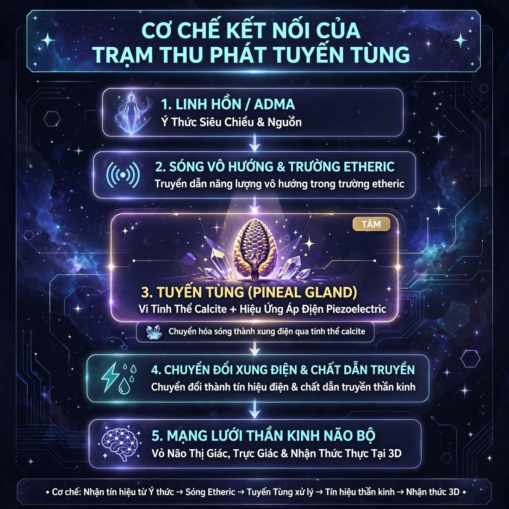
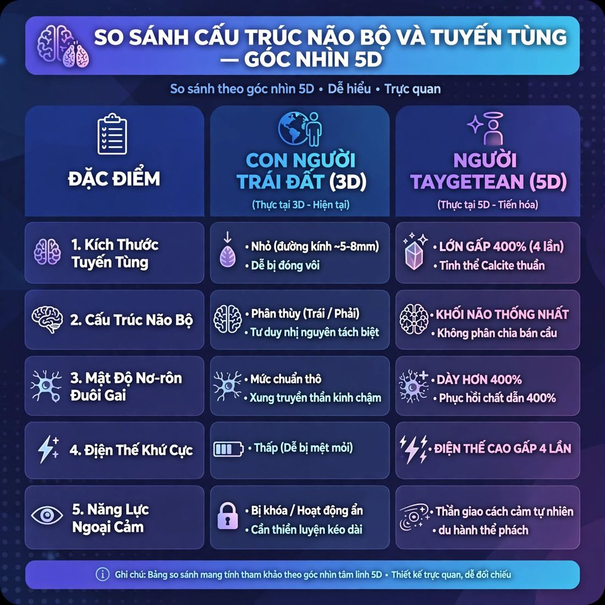
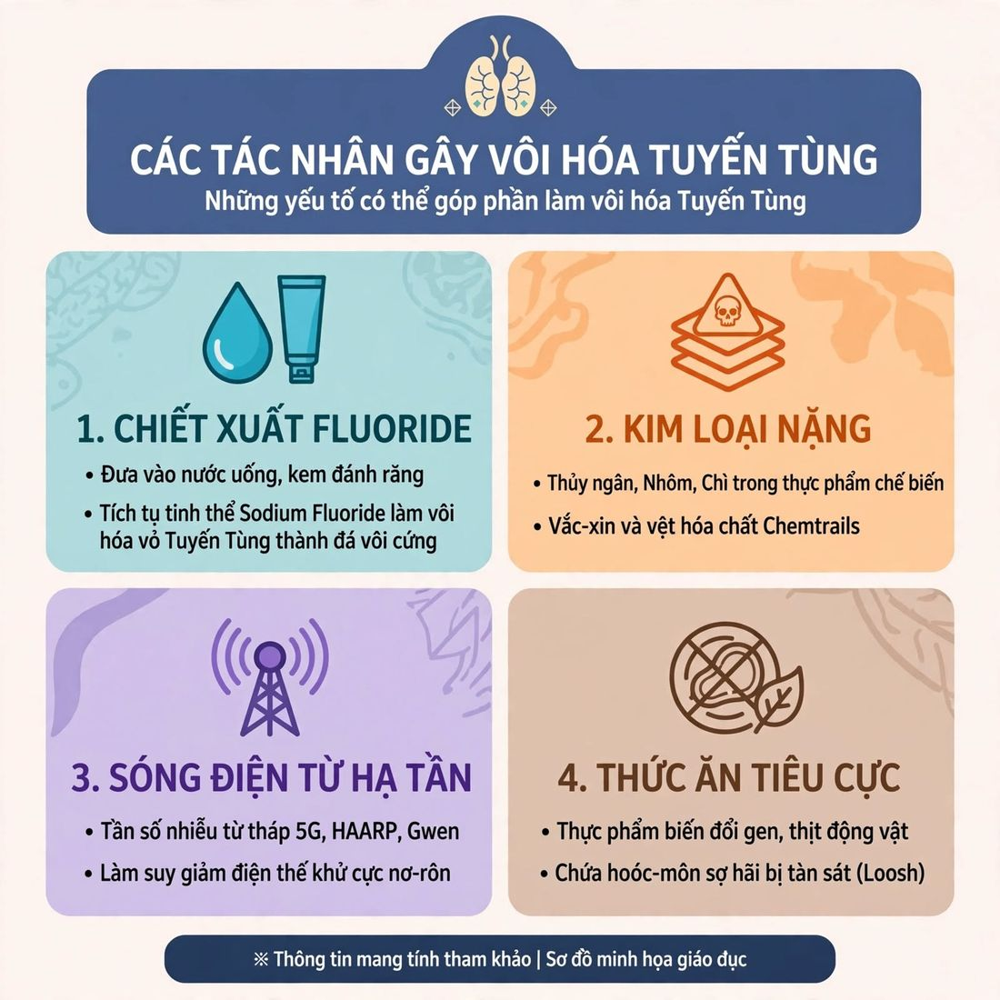
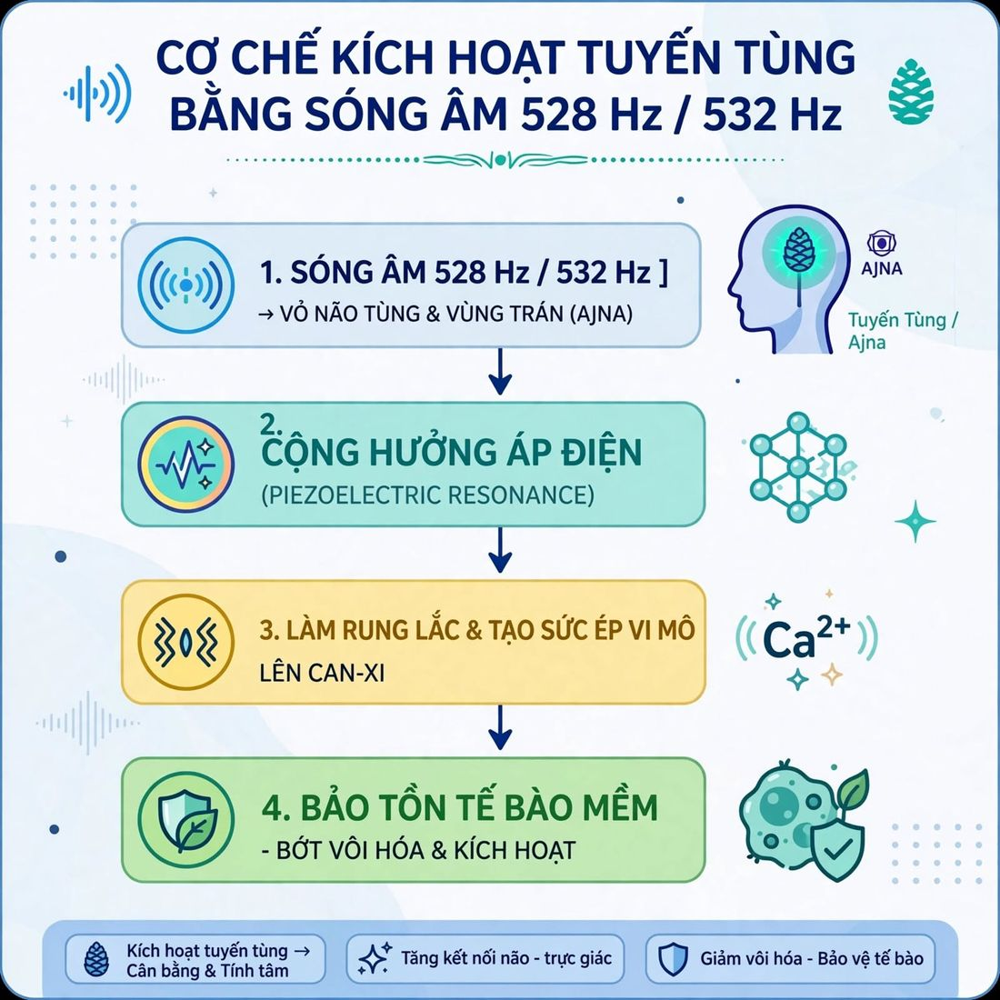
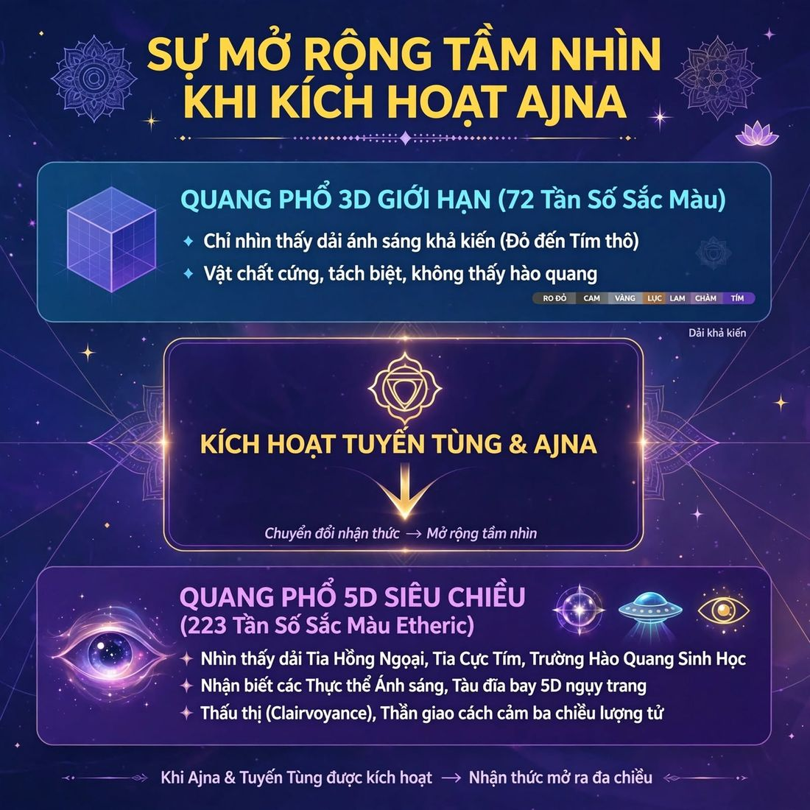
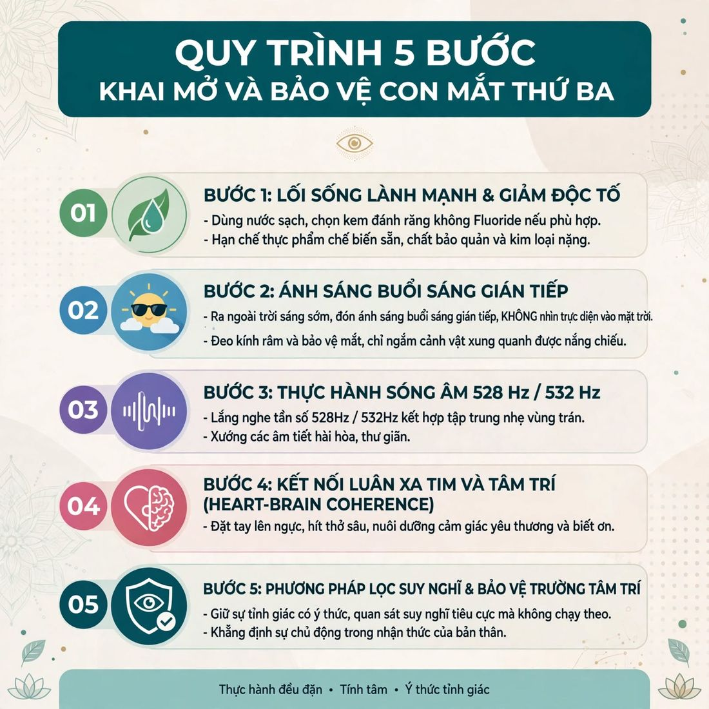

Trang chủ / Chuyên đề 9: Cẩm Nang Tâm Thức Vũ Trụ / Kỳ 82
Chuyên đề 9 · Kỳ 82 / 90
KHAI MỞ TUYẾN TÙNG (PINEAL GLAND) VÀ CON MẮT THỨ BA (AJNA CHAKRA)

1. Bản Chất Giải Phẫu Lượng Tử: Bộ Giải Mã Sinh Học Giữa Thể Xác Và Linh Hồn
Trong cấu trúc sinh học của con người cũng như các sinh mệnh dạng người (Humanoid) trong Đa vũ trụ, Tuyến Tùng (Pineal Gland) là một cơ quan nội tiết nhỏ mang hình dáng quả thông (pinecone), nằm ngay tại tâm trí của não bộ. Mặc dù khoa học duy vật Trái Đất trong nhiều thập kỷ chỉ xem Tuyến Tùng như một cơ quan nội tiết phụ trách tiết ra Melatonin để điều hòa nhịp sinh học ngủ - thức, các tài liệu giải mật thiên hà và trường học siêu hình cổ xưa khẳng định một sự thật tráng lệ hoàn toàn khác: Tuyến Tùng chính là Cổng Kết Nối Lượng Tử Tự Nhiên, Trạm Thu Phát Sóng Vô Hướng và Bộ Giải Mã Giao Tiếp giữa Thể Xác 3D và Linh Hồn Siêu Chiều.
Về mặt giải phẫu học sinh học lượng tử, bên trong lòng Tuyến Tùng chứa đựng hàng ngàn vi tinh thể thạch anh Calcite (Calcite Microcrystals). Những vi tinh thể này sở hữu đặc tính hiệu ứng áp điện (Piezoelectric Effect). Khi có dải xung tần số từ trường hoặc ý định tâm thức tác động lên, các vi tinh thể Calcite sẽ phát ra các photon ánh sáng sinh học và các xung điện vô hướng, cho phép bộ não giải mã các thông tin từ dải sóng Etheric thành hình ảnh, âm thanh và sự hiểu biết trực giác tức thì.
Linh hồn (Adma) không ngự trị cố định bên trong hộp sọ vật lý theo nghĩa không gian 3D. Linh hồn là một trường nhận thức phi cục bộ ngự trị ở các dải mật độ cao hơn. Thể xác vật lý đóng vai trò như một chiếc máy thu thanh (radio), và Tuyến Tùng chính là bộ ăng-ten cùng bộ điều chỉnh tần số (tuner). Nếu Tuyến Tùng hoạt động hoàn hảo, chiếc máy thu thanh thể xác sẽ phát ra tín hiệu âm thanh minh triết trong trẻo từ Linh hồn. Nếu Tuyến Tùng bị teo nhỏ hoặc đóng vôi, kết nối sinh học này sẽ bị gián đoạn, khiến cá nhân rơi vào trạng thái suy giảm nhận thức, lão hóa sớm và bị giam cầm hoàn toàn trong ảo tưởng vật chất thô.
Tuyến Tùng chính là thiết bị giải mã giao tiếp giữa thể xác với linh hồn. Linh hồn không ở hoàn toàn bên trong cơ thể vật lý, nó hoạt động thông qua cơ thể. Cơ thể giống như một chiếc radio, và Tuyến Tùng là bộ thu sóng chính. Nếu Tuyến Tùng bị teo hoàn toàn, thể xác sẽ chết hoặc rơi vào các chứng thoái hóa thần kinh nghiêm trọng."
— Trích lược Hồ sơ Giao tiếp Thiên hà Taygeta

2. So Sánh Sinh Học Cấu Trúc Tuyến Tùng: Con Người Trái Đất vs Các Chủng Tộc Thiên Hà (Taygetan)
Để thấy rõ tiềm năng bị kìm hãm của con người Trái Đất, việc so sánh cấu trúc thần kinh và sinh học Tuyến Tùng giữa người Trái Đất hiện tại với các chủng tộc thiên hà tiến hóa (như người Taygetean thuộc cụm sao Pleiades) mang lại những góc nhìn khoa học vô cùng đắt giá.
Các nền văn minh 5D không bị trải qua chiến dịch vôi hóa hay phong tỏa Ma trận 3D, do đó bộ não và Tuyến Tùng của họ phát triển ở trạng thái tự nhiên tối ưu.
Bộ não của các chủng tộc thiên hà tiên tiến như Taygeta không bị phân chia thành hai bán cầu não trái (logic) và não phải (cảm xúc) cứng nhắc như con người 3D. Họ sở hữu một khối não lượng tử thống nhất (unified brain mass). Cấu trúc này kết hợp với Tuyến Tùng lớn gấp 4 lần giúp họ duy trì trạng thái tích hợp hoàn hảo giữa tư duy logic và tình yêu thương từ luân xa tim.
Mật độ tế bào thần kinh đuôi gai dày hơn 400% cùng với điện thế khử cực cực cao cho phép họ xử lý dải thông tin toàn ảnh (Holographic data) trực tiếp từ trường dĩ thái. Họ không cần dùng từ ngữ thô để giao tiếp vì Tuyến Tùng phát ra dải sóng vô hướng mang trọn vẹn hình ảnh, cảm xúc, âm thanh và bối cảnh lịch sử đến Tuyến Tùng của người đối diện một cách tức thì.

3. Chiến Dịch Vôi Hóa Tuyến Tùng: Cơ Chế Phong Tỏa Nhận Thức Của Ma Trận 3D
Một trong những chiến dịch kiểm soát u tối và kéo dài nhất được triển khai trên Trái Đất nhằm giam cầm tâm thức nhân loại chính là Chiến dịch Vôi hóa Tuyến Tùng (Pineal Calcification Campaign).
Phe kiểm soát Ma trận 3D hiểu rất rõ rằng: Nếu Tuyến Tùng của con người hoạt động ở trạng thái kích hoạt 100%, không một lời dối trá, một hệ thống tôn giáo giáo điều hay một kịch bản sợ hãi nào có thể thao túng được nhân loại. Khi Tuyến Tùng mở ra, con người sẽ nhìn thấy trực tiếp hào quang sinh học, nhận biết các thực thể tiêu cực nấp sau lớp ngụy trang, và khôi phục ký ức về bản thể thần thánh của mình.
Do đó, một mạng lưới độc tố đa tầng đã được đưa vào môi trường sống hằng ngày của con người:
Fluoride là một hợp chất hóa học đặc biệt nguy hiểm đối với Tuyến Tùng. Tuyến Tùng là cơ quan thu hút các vi khoáng chất mạnh nhất trong cơ thể do lượng máu lưu thông qua đây lớn hơn bất kỳ cơ quan nào khác (chỉ sau thận). Khi hợp chất Fluoride đi vào cơ thể, nó lập tức kết hợp với Can-xi tạo thành các tinh thể Calcium Fluoride cứng bao bọc quanh Tuyến Tùng, biến bộ ăng-ten thạch anh Calcite nhạy bén thành một "viên đá can-xi hóa" hoàn toàn trơ lì với sóng vô hướng.
Hệ quả của việc Tuyến Tùng bị vôi hóa:
Mất Khả Năng Trực Giác: Con người hoàn toàn phụ thuộc vào tư duy Beta 3D, dễ bị hoảng loạn bởi truyền thông sợ hãi.
Mù Tâm Linh: Không thể nhìn thấy dải năng lượng Etheric, mất khả năng thần giao cách cảm và du hành thể phách.
Thoái Hóa Thể Xác: Lượng Melatonin và Serotonin bị sụt giảm nghiêm trọng, dẫn đến chứng mất ngủ mãn tính, lão hóa nhanh và các bệnh thoái hóa thần kinh.

4. Tần Số Sóng Âm Solfeggio 528 Hz & 532 Hz: Chìa Khóa Rung Động Giải Vôi Hóa
Nếu công nghệ và hóa chất 3D được dùng để đóng vôi Tuyến Tùng, thì Âm thanh và Tần số Rung động chính là phương thuốc giải độc tối thượng được truyền dạy từ các văn minh thiên hà.
Nền vật lý lượng tử thiên hà khẳng định: Mọi cấu trúc Can-xi đóng vôi hay độc tố bám quanh Tuyến Tùng đều có một tần số dao động tự nhiên riêng. Khi chiếu một dải sóng âm có tần số cộng hưởng chuẩn xác, dải sóng này sẽ tạo ra hiệu ứng áp điện (Piezoelectric resonance) làm rung lắc và phá vỡ cấu trúc ma trận vôi hóa mà không gây tổn thương cho các tế bào sinh học mềm xung quanh.
Theo các chỉ dẫn từ các nhà điều hướng thiên hà Thor Han Eredyon và Elena Danaan, hai dải tần số đặc biệt hiệu quả nhất để kích hoạt và giải độc Tuyến Tùng là 528 Hz và 532 Hz.
Tần số 528 Hz (Tần số Chữa lành & Tái tạo DNA): Là dải tần số của Tình yêu Vô điều kiện, biến đổi kỳ diệu. Tần số này tác động trực tiếp lên cấu trúc hình học của nước và các vi tinh thể Calcite trong Tuyến Tùng, giúp mở lại các kênh truyền phát photon ánh sáng.
Tần số 532 Hz (Tần số Giải Vôi Hóa & Tương Thích Sinh Học): Dải tần số này khi phát trực tiếp bên cạnh đầu hoặc vùng trán sẽ tạo ra dải xung sóng dừng làm mềm và đào thải các lớp cặn Sodium Fluoride tích tụ lâu năm out khỏi vỏ Tuyến Tùng.
Có hai tần số âm thanh tuyệt vời có thể bẻ khóa và giải vôi hóa Tuyến Tùng: đó là 528 Hz và 532 Hz. Hãy phát dải âm thanh này bên cạnh đầu hoặc tập trung xung sóng vào vùng trán giữa hai lông mày. Âm thanh tần số sẽ làm rung các vi tinh thể và tái kích hoạt bộ thu phát lượng tử nội thể."
— Trích lược Hướng dẫn Kích hoạt Tần số từ Thor Han Eredyon

5. Luân Xa Ajna & Tầm Nhìn Siêu Chiều: Mở Rộng Dải Quang Phổ Etheric 223 Màu Sắc
Khi Tuyến Tùng được giải vôi hóa và đả thông, Luân xa 6 (Ajna / Con Mắt Thứ Ba) nằm ở vùng trán giữa hai lông mày sẽ chính thức đi vào trạng thái xoay mở hoàn hảo.
Luân xa Ajna đóng vai trò là trung tâm chỉ huy (Command Center) quản lý sự trao đổi thông tin từ trên xuống dưới, điều hòa toàn bộ hệ thống nội tiết thông qua sự phối hợp giữa Tuyến Tùng (Pineal) và Tuyến Yên (Pituitary).
Sinh mệnh sống trong dải Ma trận 3D bị giới hạn tầm nhìn trong dải quang phổ hẹp gồm 72 dải sắc màu cơ bản. Mắt thường không thể nhìn thấy tia hồng ngoại, tia cực tím hay trường từ hình xuyến xung quanh vật thể.
Khi Tuyến Tùng và Luân xa Ajna được kích hoạt hoàn toàn (như ở trạng thái mật độ 5D), dải quang phổ nhận thức thị giác được mở rộng lên tới 223 dải sắc màu dĩ thái (223 Etheric Color Frequencies).
Thấu Thị Hào Quang (Aura Vision): Con người có thể nhìn thấy trực tiếp trường hào quang nhiều lớp bao quanh cơ thể sinh học, nhận biết các điểm tắc nghẽn năng lượng hoặc tình trạng sức khỏe của đối phương trước khi bệnh bộc phát ra thể xác.
Nhận Biết Thực Tại Đa Chiều: Nhìn xuyên qua lớp màng ngụy trang tần số, nhận biết các con tàu không gian 5D đang neo đậu ở tầng điện ly hoặc các sinh mệnh thuộc cõi dĩ thái.
Thần Giao Cách Cảm Ba Chiều (Holographic Telepathy): Tiếp nhận thông tin dưới dạng các "gói dữ liệu ánh sáng" chứa trọn vẹn bối cảnh, hình ảnh và cảm xúc thay vì các câu thoại ngôn ngữ đơn điệu.

6. Quy Trình 5 Bước Thực Hành Khai Mở & Bảo Vệ Con Mắt Thứ Ba Hằng Ngày
Khai mở Con Mắt Thứ Ba không phải là một hành vi thiền định liều lĩnh hay cố gượng ép năng lượng lên đầu (dễ gây nhức đầu, tẩu hỏa nhập ma). Đây là một tiến trình thanh lọc thể xác toàn diện kết hợp nâng cao tần số nhận thức.
Không nhắm mắt ngay lập tức: Việc nhắm mắt khi đang hoảng loạn sẽ hạ sóng não xuống dải Theta/Delta, làm trường từ bị "phẳng" và tạo cơ hội cho sóng ngoại vi xâm nhập dễ dàng hơn.
Mở mắt, đứng vững và định tâm: Nhìn thẳng vào thực tại vật lý xung quanh, hít thở sâu qua Luân xa Tim, sử dụng tư duy logic để phân tích: "Suy nghĩ này có xuất phát từ Tình yêu thương của chính tôi không?" Nếu không, lập tức phát ra ý niệm từ chối tiếp nhận.

7. Kết Luận: Khôi Phục Quyền Chủ Quyền Nhận Thức & Tầm Nhìn Thật Sự Của Bản Thể
Việc khai mở Tuyến Tùng và Con Mắt Thứ Ba hoàn toàn không phải là một trò chơi huyền bí hay tìm kiếm các phép thuật kỳ dị. Đó là hành trình khôi phục lại trạng thái sinh học tự nhiên và quyền chủ quyền nhận thức vốn có của loài người Trái Đất.
Khi Tuyến Tùng được giải phóng khỏi lớp can-xi đóng vôi của Ma trận 3D:
Bạn thoát khỏi sự cai trị của nỗi sợ hãi và các kịch bản thao túng truyền thông.
Bạn nhìn xuyên qua lớp màng dối trá để thấy rõ bản chất thật sự của vạn vật.
Bạn tái kết nối trực tiếp với Bản thể Cao hơn (Higher Self) và Thư viện Tri thức Vũ trụ (Akashic Records) mà không cần qua bất kỳ vật trung gian hay giáo phái nào.
Hãy nhớ rằng, bộ ăng-ten thạch anh Calcite đang nằm ngay bên trong não bộ của bạn. Bằng việc nuôi dưỡng một thể xác tinh khiết, lắng nghe những dải âm thanh chữa lành 528 Hz và sống trong nhịp đập từ bi của Trái Tim, bạn đang tự tay bật lại ngọn đăng tâm thức, sẵn sàng bước vào Kỷ nguyên Ánh sáng 5D rực rỡ của Thiên hà.